Quilling is amazing...when I discovered it ...I went crazy... so many design possibilities... just
with paper!
If you haven't got into quilling... I recommend you try it... you will love it!
Try that and try out these cards too...... I'm sure whoever you give it to will appreciate
it as it can also be turned in to wall art!
Step 1: Basic Shapes For This Tutorial
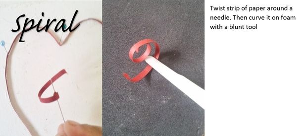
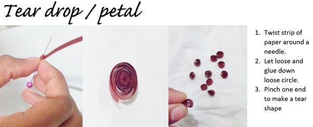
Step 2: Petal Hearts!
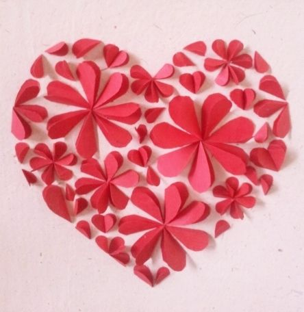
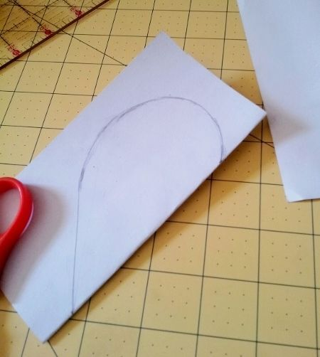
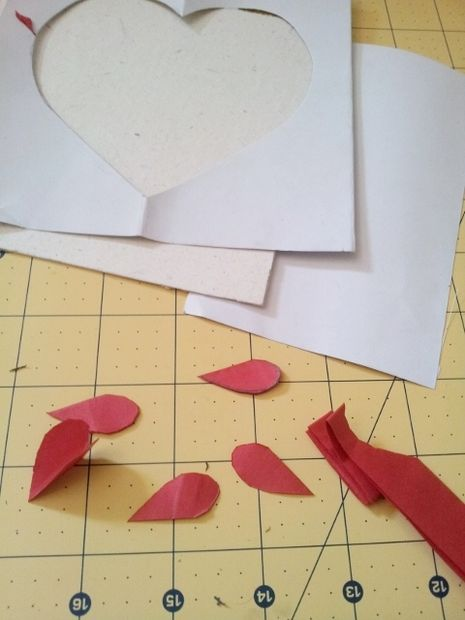
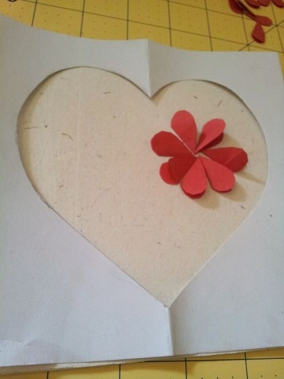
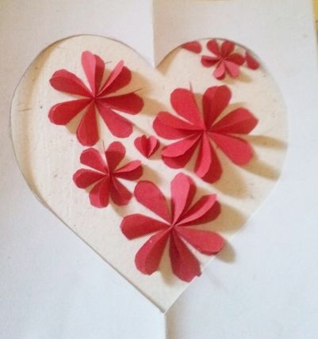
This is my favorite...but a bit time consuming in cutting the hearts :-)
Fold Cardboard in half and draw and cut template of heart. Keep the heart... you would need it for the next project.
Pin the outline template to your card or tape it down.
If you have 3-4 sizes of heart punches...you can use it to cut out various hearts and then fold them in two...making a petal shape.
If you don't have punches...so fuss! simply fold paper in half, draw your heart...then fold lengthwise so that you can cut about 4-5 hearts in one go.
When I find an easy way...I do it ;-) haha.
I had the smallest heart puncher...so I used that and then using that as a guide I made templates of larger hearts to draw on the paper.
First fill in the largest petals. Place the largest heart petals in the shape of a flower...making sure the open flap goes in the same direction.
Now fill in with the second largest heart petal. Gradually move to the smallest heart petal.
While filling up make sure you take in the shape of the heart outline with the the petals being placed strategically :-)
Now fill up the gaps with petals formed in hearts and single petals . That's it!
Step 3: Swirl Me A heart!
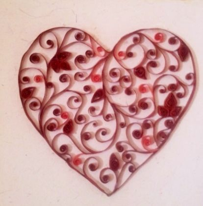
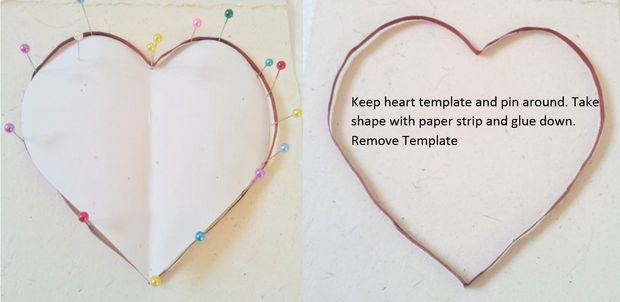
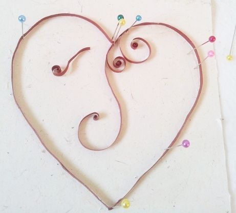
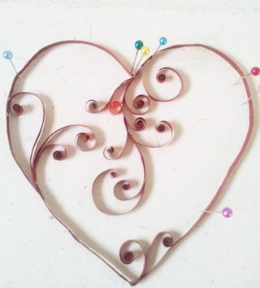
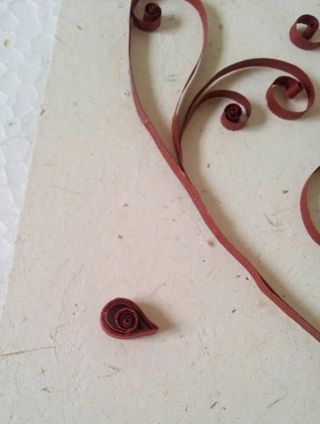
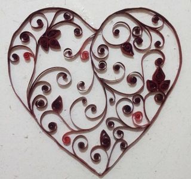
I love swirls A heat with swirls?? like it? Try it!
All instructions are pretty basic and so simple.
Make the swirls and petals as per instructions in the basic shapes.
Pin the heart template you cut out in the earlier step to your card. Use pins to take the shape of the card and wrap your paper strip around it taking the shape. Glue it down at the the bends and in the curves.
Now place your scrolls randomly in the heart. Try and fill up as much as possible. Insert the petals also according to my picture or where you would like it. Add bright red swirls randomly too to give it an extra color.
You could also add small gem stones on the petals. But I opted out of it.
That is it! Please if you make some, I would like to see your version of it. Any questions you have, don't hesitate to ask! I would love to answer.